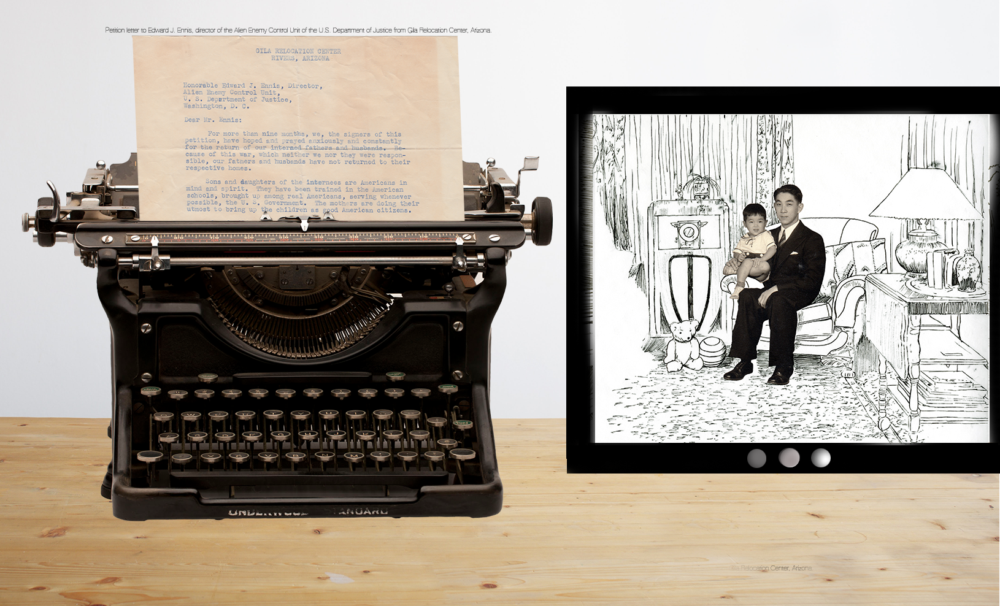

Just a random paragraph to try to test the highlighting feature with children
This is a non-bolded portion of a paragraph like when users write paragraphs about their work. They could go on for quite a bit if they wanted to.
And here is the final line where they would tie everything up with a nice neat bow.